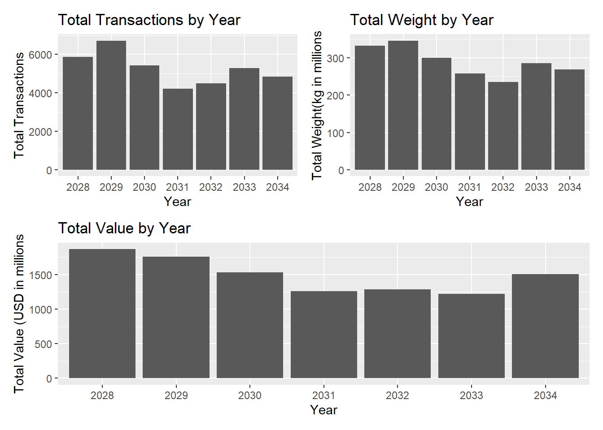
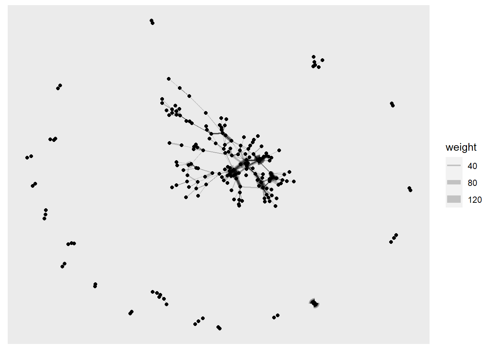
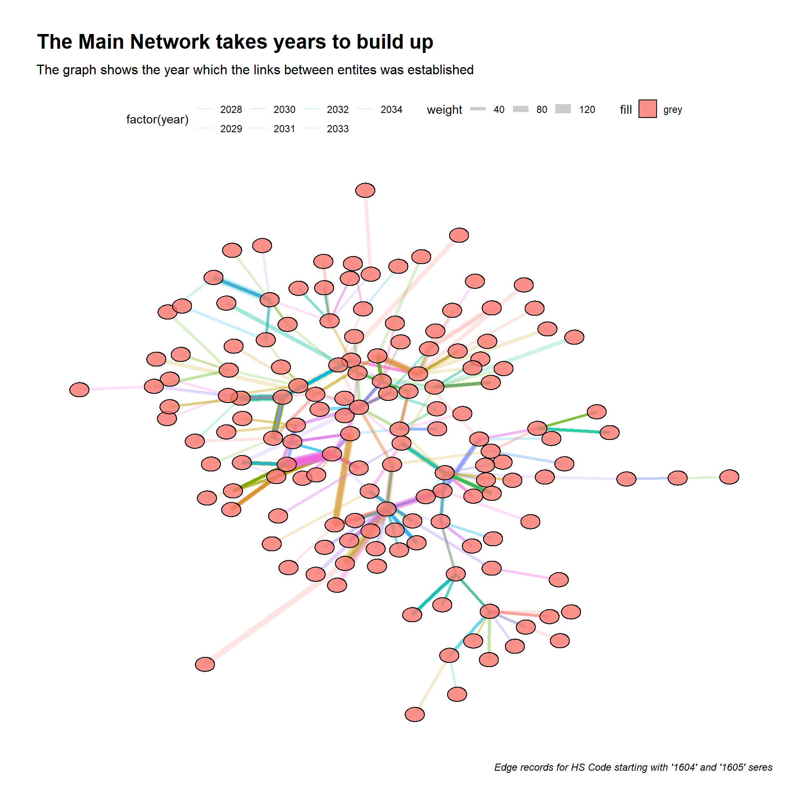
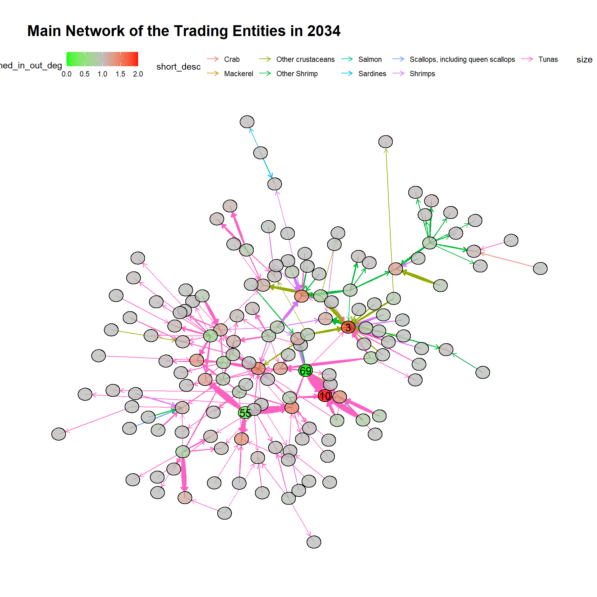
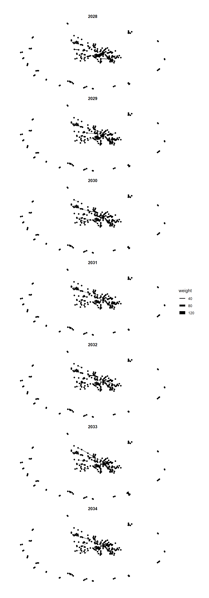

FishEye Knowldge Graph: Identify Temporal Patterns of individual entities and between entities
VAST Chaellenge 2023: Mini-Challenge 2
(First Published: May 28, 2023)
Load all relevant packages
import data
Extract the nodes info from mc2 data frame
id -- Name of the company that originated (or received) the shipment
shpcountry -- Country the company most often associated with when shipping
rcvcountry -- Country the company most often associated with when receiving
Read the original nodes table
We will store mc2_nodes in rds format for ease of subsequent retrieval. This code need only be executed once and henece. Thereafter we will reload the mc2_nodes dataframe again
Extract the edges info from mc2 data frame
arrivaldate -- Date the shipment arrived at port in YYYY-MM-DD format.
hscode -- Harmonized System code for the shipment. Can be joined with the hscodes table to get additional details.
valueofgoods_omu -- Customs-declared value of the total shipment, in Oceanus Monetary Units (OMU)
volumeteu -- The volume of the shipment in ‘Twenty-foot equivalent units’, roughly how many 20-foot standard containers would be required. (Actual number of containers may have been different as there are 20ft and 40ft standard containers and tankers that do not use containers)
weightkg -- The weight of the shipment in kilograms (if known)
Read the original edge table
Also store the mc2_edge info in native rds format.
Aggregate the weight information between each pair of notes and by the relationship type
Get summary stats on the edge data frame
Remove likely duplicate records from edges
We are unsure of the reasons behind the duplicate records and do not discount the possibility that they could be genuine. On balance, we find it unlikely that duplicate records exist for every day, with same weight and among the same pair of entities. Hence, we will use the distinct() function on the edge data to only retain only unique edge records for our analysis.
Identifying edge records that relate to the fishing industry
We extract the top 5 HS code used for the edge records and match against the HS Nomenclature 2022 available at World Customs Organisation (WCO)’s website, supplemented by the HSN Code List that is found on Connect2India website.
| S/No. | HS Code | Description |
|---|---|---|
| 1 | 306170 | Fish and crustaceans, molluscs and other aquatic invertebrates. |
| 2 | 950300 | Tricycles, scooters, pedal cars and similar wheeled toys; dolls’ carriages; dolls; other toys; reduced-size (“scale”) models and similar recreational models, working or not; puzzles of all kinds. |
| 3 | 870899 | Other parts and accessories of the motor vehicles |
| 4 | 611020 | Cotton jerseys, pullovers, cardigans, waistcoats and similar articles, knitted or crocheted. |
| 5 | 940360 | Other wooden furniture |
Next, we will use this list to extract edge records related to fish industry.
We do a frequency count by hscode to understand the volume for each hscode, the subset contains 30 hscodes pertaining to different types of seafood.
Prepare the Edges for Analysis
Group edges by source, target, date, and aggregate by count ( which will be renamed as weight), sum of weight, sum of value
Show the code
# minimum count (or weight) cut-off for a substantial relationship to exist over 7 years
cut_off = 20
# group by edges
mc2_edges_aggregated <- mc2_edges_fish %>%
mutate(weeknumber = isoweek(arrivaldate),
year_month = format(arrivaldate,"%Y-%m"),
year = year(arrivaldate)) %>%
group_by(source,target,hscode, year_month, year) %>%
summarise(weight=n(),weight_sum = sum(weightkg),value_goods_sum =sum(valueofgoodsusd, na.rm = TRUE)) %>%
filter(source != target) %>%
filter(weight>cut_off) %>%
ungroup %>%
inner_join(select(hscode_fish, hscode, short_desc), by = "hscode")
# Save a copy of the edge file
write_rds(mc2_edges_aggregated, "data/mc2_edges_aggregated.rds")y-o-y plot
Show the code
weight_yoy = ggplot(mc2_edges_aggregated, aes(x= as.factor(year), y = weight_sum/1000000)) +
geom_col() +
#geom_text(aes(label = weight_sum), vjust = -0.5,color='white') +
labs(x = "Year", y = "Total Weight(kg in millions") +
ggtitle("Total Weight by Year")
count_yoy = ggplot(mc2_edges_aggregated, aes(x= as.factor(year), y = weight)) +
geom_col() +
#geom_text(aes(label = weight_sum), vjust = -0.5,color='white') +
labs(x = "Year", y = "Total Transactions") +
ggtitle("Total Transactions by Year")
value_yoy = ggplot(mc2_edges_aggregated, aes(x= as.factor(year), y = value_goods_sum/1000000)) +
geom_col() +
#geom_text(aes(label = weight_sum), vjust = -0.5,color='white') +
labs(x = "Year", y = "Total Value (USD in millions") +
ggtitle("Total Value by Year")
(count_yoy + weight_yoy)/value_yoy
Prepare the nodes for Analysis
The nodes within the node file must be unique and therefore the filter function is used to extract only the nodes that appear based on the source and target.
Show the code
mc2_nodes_aggregated <- mc2_nodes %>%
filter(id %in% c(mc2_edges_aggregated$source, mc2_edges_aggregated$target)) %>%
# Duplicate the id column as this name will be replaced once we convert to when we apply tbl_graph()
mutate(label = id) %>%
mutate(row_id = row_number()) %>%
distinct()
# Replace with NA values in shpcountry and rcvcountry to prevent downstream issue
mc2_nodes_aggregated <- replace(mc2_nodes_aggregated, is.na(mc2_nodes_aggregated), 'unknown')
# Save a copy of the nodes file
write_rds(mc2_nodes_aggregated, "data/mc2_nodes_aggregated.rds")Prepare the tbl_graph_object
Derive centrality measures for nodes
Since this is a directed graph, will compute the in-degree centrality, out-degree centrality, closeness and betweenness measures for the nodes.
Show the code
mc2_graph <- mc2_graph %>%
activate(nodes) %>%
mutate(
in_deg_centrality = round(centrality_degree(weights = weight, mode = "in", loops = FALSE),3),
out_deg_centrality = round(centrality_degree(weights = weight, mode = "out", loops = FALSE),3),
out_deg_closeness = round(centrality_closeness(weights=weight,mode='out',normalized = TRUE),3),
in_deg_closeness = round(centrality_closeness(weights=weight,mode='in',normalized = TRUE),3))
#%>%
# mutate(combined_degree = in_deg_centrality - out_deg_centrality) %>%
# mutate(combi_norm_degree =((combined_degree-min(combined_degree))/(max(combined_degree)-min(combined_degree)) )*100) Charting a plot
Show the code

Remove disconnected nodes and focus on the main graph
Replot graph to check
Show the code

Show the code
| Num_of_Nodes | Num_of_Edges |
|---|---|
| 151 | 771 |
Show the code
#
create_graph <- function(data, range, title) {
set.seed(123)
g <- data %>%
as_tbl_graph() %>%
activate(edges) %>%
filter(year %in% range) %>%
activate(nodes) %>%
mutate(
in_deg_norm = ifelse(in_deg_centrality == 0, 0, (in_deg_centrality - min(in_deg_centrality)) / (max(in_deg_centrality) - min(in_deg_centrality)) + 1),
out_deg_norm = ifelse(out_deg_centrality == 0, 0, (1 - (out_deg_centrality - min(out_deg_centrality)) / (max(out_deg_centrality) - min(out_deg_centrality))))
) %>%
mutate(combined_in_out_deg = in_deg_norm + out_deg_norm) %>%
mutate(row_id = ifelse((combined_in_out_deg>=1.6) | (combined_in_out_deg <=0.4),row_id,""))
Isolated <- which(degree(g) == 0)
g2 <- delete.vertices(g, Isolated)
g2 %>%
as_tbl_graph() %>%
ggraph(layout = 'kk') +
geom_edge_link(aes(), alpha = 0.5) +
geom_edge_fan(
aes(color = short_desc),
arrow = arrow(length = unit(2, 'mm')),
end_cap = circle(3, 'mm'),
start_cap = circle(3, 'mm')
) +
geom_node_circle(aes(fill = combined_in_out_deg,r = 0.2 ),alpha=0.8) +
scale_fill_gradient2(low = "green", mid = "gray", high = "red", midpoint = 1) +
geom_node_text(aes(label = row_id, size=0.8), colour = "black") +
theme_graph() +
theme(legend.position = "top") +
labs(title = title)
}Show the code

Temporal Analysis of Individuals and between entities
Function to plot yearly graph
Centrality measures of various transactions
In-degree, Out-Degree, Betweenness Score
Top 10 nodes with ’in-degree” scores:
View Graph Year by year
Show the code

(c) Prepare the group, size
Show the code
# visNetwork(mc2_nodes_interactive_in,
# mc2_edges_interactive,
# main = "Transaction graph grouped by In-Deg centrality intervals",
# height = "500px", width = "100%") %>%
# visIgraphLayout(layout = "layout_with_fr") %>%
# #visNodes(shape = 'dot', value = 'pagerank') %>%
# visEdges(arrows = 'to',
# smooth = list(enables = TRUE,
# type= 'continuous'),
# shadow = FALSE,
# dash = FALSE) %>%
# visOptions(highlightNearest = list(enabled = T, degree = 1, hover = T),
# nodesIdSelection = TRUE,
# selectedBy = "group") %>%
# visInteraction(hideEdgesOnDrag = TRUE) %>%
# visLegend() %>%
# visLayout(randomSeed = 123)Graph by out degree
(a) Create group
(b) Create graph
Show the code
# visNetwork(mc2_nodes_interactive_out,
# mc2_edges_interactive,
# main = "Transaction graph grouped by Out-Deg centrality intervals",
# height = "500px", width = "100%") %>%
# visIgraphLayout(layout = "layout_with_fr") %>%
# #visNodes(shape = 'dot', value = 'pagerank') %>%
# visEdges(arrows = 'to',
# smooth = list(enables = TRUE,
# type= 'continuous'),
# shadow = FALSE,
# dash = FALSE) %>%
# visOptions(highlightNearest = list(enabled = T, degree = 1, hover = T),
# nodesIdSelection = TRUE,
# selectedBy = "group") %>%
# visInteraction(hideEdgesOnDrag = TRUE) %>%
# visLegend() %>%
# visLayout(randomSeed = 123)Look into the to supplier Playa del Tesoro OJSC
(a) Who are its customers
From the map, the sole customer was Fresh Wharf SRL Consulting.
Others include:
Get transactions with Fresh Wharf SRL consulting
Heatmap
Show the code
# playa_heatmap <- playa %>%
# select(year, month, weight) %>%
# pivot_wider(names_from = month, values_from = weight)
#
#
# playa_heatmap <- replace(playa_heatmap, is.na(playa_heatmap), 0)
#
# row.names(playa_heatmap) <- playa_heatmap$year
#
# playa_matrix <- data.matrix(playa_heatmap)
#
# playa_matrix <- playa_matrix[,-1]
#
# heatmap(playa_matrix,Rowv=NA, Colv=NA)Look at company Estrella de la Costa SRL
Check the trend
Show the code
# estrella <- mc2_edges_aggregated %>%
# filter(source == 'Estrella de la Costa SRL') %>%
# inner_join(mc2_nodes, select(id, rcvcountry), by = c('source'='id'))
#
# ggplot(estrella,
# aes(x = year_month,
# y = weight,
# group = target)) +
# geom_line() +
# facet_wrap(~target, ncol=1) +
#
# theme_minimal()–>Look at company OceanicOrigin Foods Co Consulting
check the trend
Show the code
# oceanic <- mc2_edges_aggregated %>%
# filter(source == 'OceanicOrigin Foods Co Consulting') %>%
# inner_join(mc2_nodes, select(id, rcvcountry), by = c('source'='id'))
#
# ggplot(oceanic,
# aes(x = year_month,
# y = weight,
# group = target)) +
# geom_line() +
# facet_wrap(~target, ncol=1) +
# theme_minimal()Code block
Code block
Code block
Code block
Code block
References
Harshita Kanodia (June 2022), IUU Fishing in the Indian Ocean: A Security Threat. Diplomatist, https://diplomatist.com/2022/06/09/lets-catch-the-big-fish/